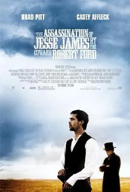

2007 film · directed by Andrew Dominik
Does Brad Pitt die in The Assassination of Jesse James by the Coward Robert Ford?
He plays Jesse James.
Want to guess first?
Revealing shows only the answer. Everything else stays behind its own curtain.
Yes.
He does not make it to the credits. It happens at the climax.
How it happens, in words. No pictures yet.
Shot in the back of the head by Robert Ford.
On the morning of April 3, 1882, in his St. Joseph, Missouri home, Jesse reads a newspaper report of Dick Liddil's surrender and realizes the Fords have betrayed him. Seemingly resigned, he removes his gun belt, climbs onto a chair and turns his back to dust a framed picture on the wall. Robert Ford draws the nickel-plated revolver Jesse had gifted him days earlier and shoots him in the back of the head. Jesse crumples to the floor, dead, and the Fords flee to claim the reward.
The film strongly implies Jesse knows what's coming and allows it. The death occurs roughly two hours in, followed by a long epilogue tracing Ford's own downfall and murder.
- Cause
- gunshot
- When
- climax
- Director
- Andrew Dominik
- Runtime
- 160 min
The clip, from YouTube. This is the whole thing.
The scene
Plays from YouTube. Open on YouTube